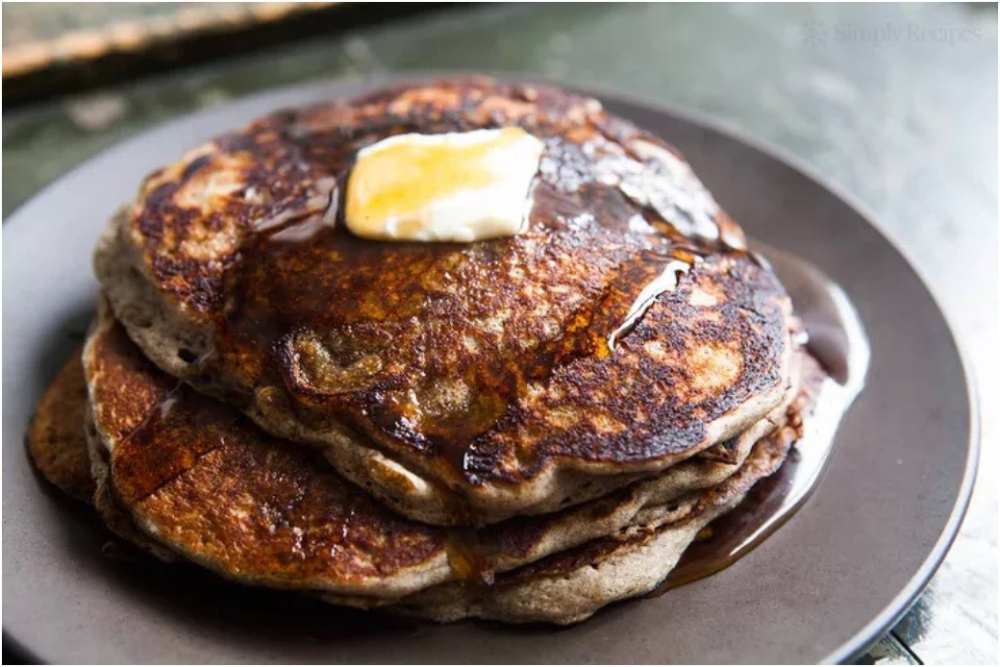

Buckwheat Pancakes

Description
Buckwheat is not a cereal, like wheat is. It is related to sorrel,
knotweed, and rhubard, and is called a pseudocereal,
because its uses are similar to other grains.
Buckwheat pancakes are heartier than white flour pancakes.
Ingredients
- 1/2 cup buckwheat flour
- 1/2 cup white flour
- 1/2 cup whole wheat flour
- 3 Tbsp sugar
- 1 tsp baking soda
- 2 Tbsp butter
- 1 egg
- 2 cups buttermilk
Instructions
- Mix together dry ingredients
- Mix wet ingredients into dry,
saving the buttermilk for last.
- Ladle onto hot pan.
- Flip when bubbles rise to the surface
and stay popped.
- Serve warm with butter and maple syrup.